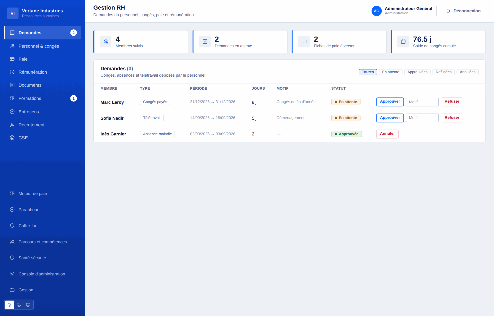
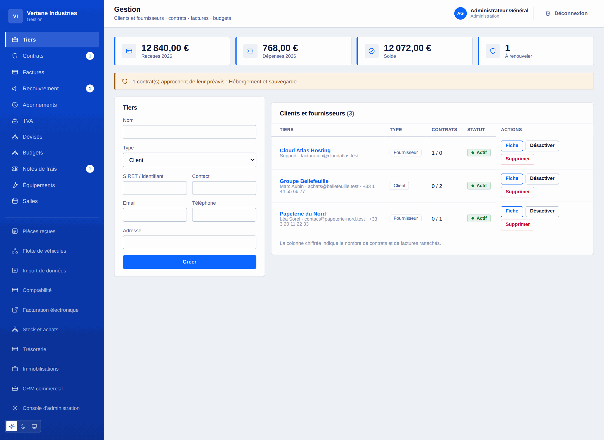
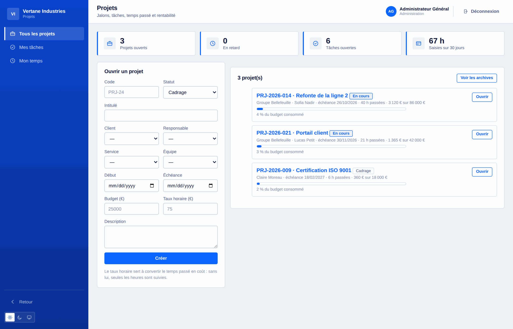
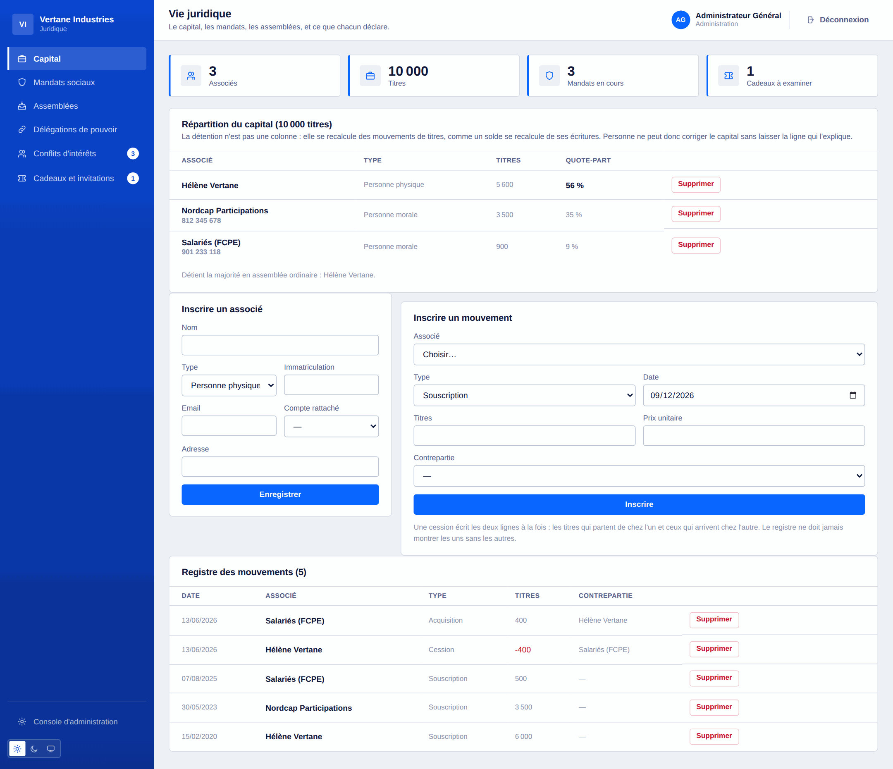

Tout ce que Toutadmin sait faire
La liste complète, domaine par domaine. Chaque ligne correspond à du code livré et testé, pas à une intention.
121 · Les fonctions marquées « module » s’activent à la demande depuis la console.
Socle et organisation
Ce qui tient le reste : les comptes, les rattachements, et le vocabulaire commun à tous les espaces.
- Comptes, rôles cumulables : administrateur, RH, gestion, informatique, référent d’alerte
- Manager déduit de l’encadrement réel, jamais accordé à la main
- Services et équipes, plusieurs managers par périmètre, rattachements relus à chaque requête
- Organigramme visuel, encadrement compris, et les personnes rattachées nulle part
- Annuaire avec recherche et filtres, visibilité pilotée par la seule administration
- Messagerie interne, et adresse professionnelle configurée par l’administration
- Recherche globale cloisonnée à la source : ce que vous ne pouvez pas voir n’est pas cherché
- Centre de notifications par personne, avec accusé de lecture
- Import de masse en CSV : aperçu contrôlé, écriture tout ou rien
- Assistant d’installation, réglages d’instance, sept modules débloquables
- 16 langues, 3 palettes, thème clair/sombre/système, interface responsive

Espace du salarié
La page que tout le monde ouvre le matin : ce qui le concerne, et rien d’autre.
- Tableau de bord personnel : manager, actualités, demandes, documents à accuser
- Demandes de congés, RTT, absence, télétravail : jours ouvrés calculés, week-ends exclus
- Solde de congés à jour, historique des ajustements motivés
- Fiches de paie consultables, et conservées cinquante ans au coffre-fort
- Agenda personnel et agenda partagé d’équipe
- Planning de la semaine, astreintes, permanences
- Outils attribués avec identifiant propre — aucun mot de passe tiers stocké
- Profil : photo, présentation, téléphone, langue, mot de passe, fermeture des sessions
- Pointage au chronomètre pour les freelances, un seul en cours à la fois
- Déclaration d’intérêts et de cadeaux, visible de soi seul


Ressources humaines
Le dossier du salarié, de son arrivée à son départ, avec les échéances qui vont avec.
- Approbation des demandes avec décompte du solde, refus motivé, annulation qui recrédite
- Fiches de paie : création, suivi du versement, génération en lot
- Documents d’entreprise avec accusé de réception nominatif
- Formation : catalogue, sessions, inscriptions, coût et durée
- Entretiens annuels : campagne, trame, compte rendu
- Arrivée et départ : listes de contrôle suivies, porteur et échéance par tâche
- Compétences et habilitations, avec date de recyclage et alerte à l’avance
- Points individuels manager–collaborateur : résumé partagé, notes du manager séparées
- Coffre-fort numérique accessible après le départ, documents scellés par leur empreinte
- Signature électronique simple : circuit ordonné, empreinte, sceau, attestation
- Contrats de travail à échéance : le compte se ferme tout seul le jour dit

Recrutement et talents
Des candidatures au premier jour, sans tableur intermédiaire.
- Offres d’emploi et suivi des candidatures par étape
- Réception des CV : PDF, DOCX ou texte, écrits hors du dépôt
- Extraction du contenu et CVthèque cherchable
- Critères pondérés, score, seuil, classement des candidatures
- Passage d’un candidat retenu au parcours d’arrivée
- Sondages internes et baromètre social, anonymes par construction
- Sous cinq réponses, aucun résultat n’est affiché

Santé, sécurité et CSE
Les obligations qui se tiennent par écrit, et se rappellent toutes seules.
- Document unique : unités de travail, dangers, cotation, mesures, revue datée
- Registre des accidents du travail et des presque-accidents, jours d’arrêt
- Équipements de protection : dotation nominative, durée de validité, renouvellement
- Visites médicales : embauche, périodique, reprise, à la demande
- CSE : élections, corps électoral, scrutin anonyme, mandats et leur échéance
- Réunions du comité, avantages et prestations aux salariés
- Espace de gestion qui se referme de lui-même à la fin du mandat

Finance et gestion
Les tiers, les contrats, l’argent qui entre et celui qui sort.
- Tiers clients et fournisseurs, fiche complète : contacts, contrats, factures
- Contrats et surtout préavis : la date limite de dénonciation est calculée et alertée
- Factures dans les deux sens, TTC calculé, retard déduit de l’échéance
- Budgets par service et par exercice, consommé agrégé automatiquement
- Notes de frais : dépôt, approbation, remboursement — jamais l’un sans l’autre
- Pièces de conformité des tiers, datées et signalées quarante-cinq jours avant terme
- Évaluations fournisseurs notées, la dernière faisant foi plutôt que la moyenne
- Multidevise avec taux figé à l’émission de chaque pièce
- Facturation récurrente : l’abonnement est le moule, la facture est la pièce
- Lecture automatique des factures reçues et capture IMAP d’une boîte comptable


Comptabilité, paie et TVA
Des modules, éteints par défaut, qui s’activent quand vous en avez besoin.
- Comptabilité en partie double : plan comptable, journaux, balance, grand livre
- Une écriture déséquilibrée est refusée, et le message dit de combien
- Une facture se passe en écriture d’un clic ; export CSV pour le cabinet
- Moteur de paie : barèmes paramétrables, brut au net, part patronale, coût employeur
- Bulletin détaillé ligne à ligne, génération en lot, simulateur
- Déclarations de TVA : collectée, déductible, ventilation par taux, crédit reportable
- Une déclaration déposée ne se recalcule plus : c’est une pièce, pas un tableau de bord
- Facturation électronique : contrôle EN 16931 et export du XML CII
- Trésorerie : comptes, mouvements, rapprochement, prévisionnel à douze semaines
- Immobilisations : amortissement linéaire et dégressif, valeur nette comptable

Achats, stock et recouvrement
Ce qu’on commande, ce qu’on reçoit, ce qu’on facture — et ce qu’on nous doit.
- Demandes d’achat validées par le manager, puis par la gestion au-delà du seuil
- Bons de commande, réceptions, et rapprochement à trois : commandé, reçu, facturé
- Recevoir plus que commandé est refusé ; l’écart de facturation est nommé, pas bloqué
- Articles, mouvements, seuil d’alerte : le stock est la somme des mouvements
- Une ligne rattachée à un article entre en stock au moment de sa réception
- Balance âgée client par tranche de retard
- Relances échelonnées : rappel, relance, mise en demeure, selon ce qui a déjà été envoyé
- Chaque relance consignée avec son niveau et sa date

Projets, temps et rentabilité
Savoir où en est un projet, et ce qu’il a réellement coûté.
- Projets rattachés à un client, un service, une équipe et un responsable
- Jalons datés et tâches en colonnes par statut, avec priorité et estimation
- Temps passé imputé au projet et à la tâche, au plus 24 h par saisie
- Rentabilité : heures, coût au taux horaire, marge restante, part du budget consommée
- Trois cercles de droits : la gestion, le responsable, les membres
- Temps par personne, et santé des projets sur le tableau de bord de direction


Support et connaissances
Les demandes internes et clientes dans un même circuit, et les réponses qui restent.
- Tickets internes et clients, priorité, origine, assignation
- Délai de première réponse déduit de la priorité, recalculé depuis l’ouverture
- Notes internes invisibles du demandeur, et qui ne comptent pas comme réponse
- Cloisonnement par catégorie : une demande RH ne sort pas des RH
- Base de connaissances par catégorie, recherche plein texte, portée réglable
- Indicateurs : tickets ouverts, en retard, délai moyen

Opérations et moyens généraux
Le planning, la qualité, les salles, les véhicules, l’accueil.
- Planning par personne et par jour : postes, astreintes, permanences, télétravail
- Chevauchement ou absence déjà accordée : le créneau est refusé à la création
- Roulements réutilisables, postes de nuit, publication de la semaine
- Qui est d’astreinte à cet instant, avec son numéro
- Qualité : non-conformités, causes racines, actions correctives et vérification d’efficacité
- Audits internes : constats, synthèse, promotion d’un constat en non-conformité
- Équipements affectés et repris, avec historique des détenteurs
- Salles et réservations, chevauchement refusé en nommant qui occupe
- Flotte : entretien, contrôle technique, assurance, sinistres, kilométrage
- Accueil : registre des visiteurs, liste « dans les murs », courrier entrant et sortant

Direction et gouvernance
Ce que la direction regarde, et ce qu’elle décide.
- Tableau de bord : effectif, absents, facturé, marge, masse salariale, trésorerie, support
- Objectifs et résultats clés, chacun sur sa propre échelle, y compris décroissante
- Réunions : convocation, ordre du jour, présences pointées, compte rendu
- Registre des décisions avec leur motif — ce qu’on cherche deux ans plus tard
- Actions confiées avec porteur et échéance, rattachées à leur décision
- Registre des risques : cotation brute et résiduelle, matrice 5 × 5, traitement, revue
- Événements d’entreprise : capacité, liste d’attente automatique, émargement, budget
- Échéances consolidées de tous les espaces dans une seule liste triée

Informatique et développement
Le parc logiciel, les accès, les incidents, et ce que l’équipe livre.
- Parc logiciel : sièges tenus comme une contrainte, coût annualisé, renouvellements
- Revue des accès applicatifs : comptes fermés d’abord, puis droits d’administration
- Incidents du SI, horodatés, avec délai moyen de rétablissement mesuré
- Référentiel des services applicatifs : criticité, responsable, dépôt, documentation
- Registre des livraisons par environnement et indicateurs de livraison
- Sauvegardes : archive horaire, intégrité vérifiée, restauration, externalisation
- API REST de lecture à portées, webhooks sortants signés
- Export intégral de l’instance en JSON, documents compris, secrets exclus

Conformité, juridique et données personnelles
Ce qu’une entreprise doit pouvoir prouver, tenu au fil de l’eau.
- Registre du capital : détention déduite des mouvements, cession en deux jambes
- Mandats sociaux avec durée, révocation, et fin signalée à l’avance
- Assemblées générales : quorum en titres, résolutions, votes, procès-verbal
- Délégations de pouvoir : objet, plafond, durée, échéance alertée
- Conflits d’intérêts et cadeaux : chacun déclare pour soi, l’administration examine
- Canal d’alerte interne chiffré, référents désignés, suivi anonyme par code
- Journal d’audit horodaté, exportable, et scellé par chaînage d’empreintes
- RGPD : registre des traitements, droit d’accès exporté, effacement raisonné
- Circuits d’approbation configurables : formulaires, seuils, validateurs par fonction


Il manque quelque chose ?
Dites-le. Le produit avance par lots, et les demandes des entreprises qui l'utilisent passent devant.
Commencez gratuitement, changez de formule quand vous grandirez
Sous cinq salariés, tout est gratuit. Au-delà, 5 € par salarié et par mois — dégressif à partir de deux cent cinquante — ou 10 000 € une fois pour la licence à vie. Aucune carte bancaire pour essayer.